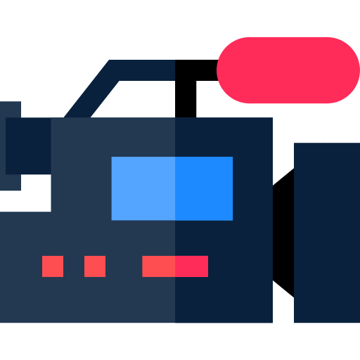

<mat-toolbar class="nav-bar">
  <div class="nav-buttons" *ngIf="showNavButtons">
    <button class="nav-button">Početna</button>
    <button class="nav-button">Profil</button>
    <button class="nav-button" (click)="logoutClicked();">Logout</button>
  </div>
  
  <span class="text-logo">direktorg.</span>
</mat-toolbar>

<router-outlet></router-outlet>

<footer class="footer">
  <label>Copyright@2020</label>
</footer>